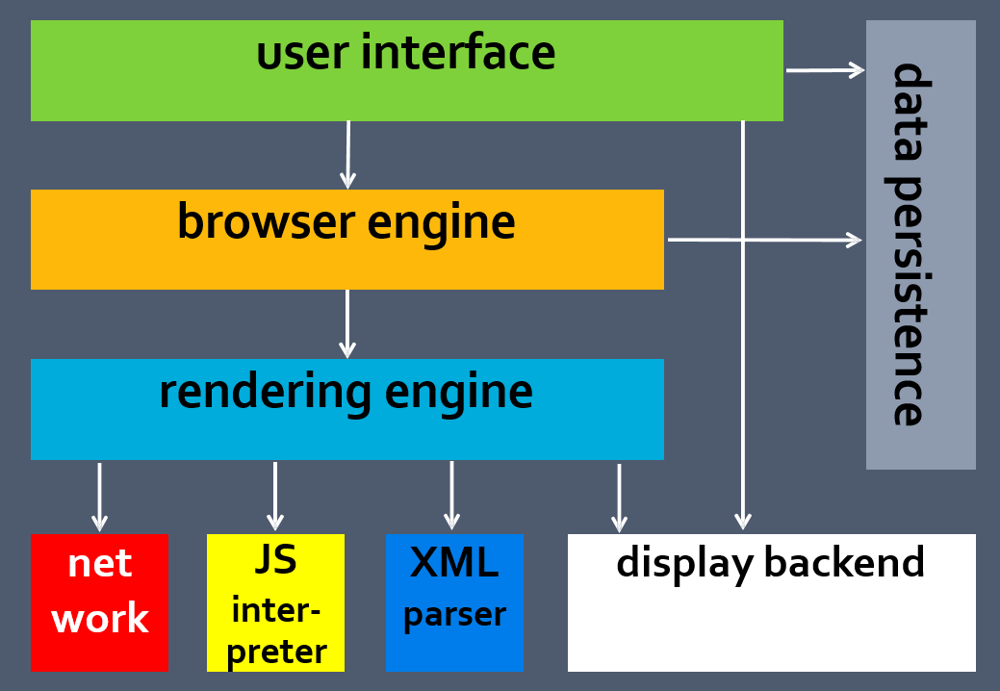

How Browser Works
An introduction of browser internal mechanism.
Browser Overview
What is web browser?
A web browser is a software application for retrieving, presenting and traversing information resources on the World Wide Web.
How many browsers are there?

- WorldWideWeb, February 25, 1991
- Mosaic, April 22, 1993
- Netscape Navigator and Netscape Communicator, October 13, 1994
- Internet Explorer, August 16, 1995
- Opera, 1996, see History of the Opera web browser
- Mozilla Navigator, June 5, 2002[19]
- Safari, January 7, 2003
- Mozilla Firefox, November 9, 2004
- Google Chrome, September 2, 2008
What is the current web browser market share?
http://www.netmarketshare.com/How does web browser earn money?

Sponsored by Search Engine

What are the common web standards web browsers support?
- Recommendations published by the World Wide Web Consortium (W3C)[2]
- Internet standard (STD) documents published by the Internet Engineering Task Force (IETF)
- Request for Comments (RFC) documents published by the Internet Engineering Task Force [3]
- Standards published by the International Organization for Standardization (ISO) [4]
- Standards published by Ecma International (formerly ECMA) [5]
- The Unicode Standard and various Unicode Technical Reports (UTRs) published by the Unicode Consortium [6]
- Name and number registries maintained by the Internet Assigned Numbers Authority (IANA) [7]
Concepts
- what is html
- what is xhtml
- what is dom
- what is css
- what is javascript
- what is ecmascript
- what is html5
Do you really know html?
<P> This is not html, it is plain text.<br><br>
I said:<br>This is html, not plain text.html 4.01
<p>This is not html, it is plain text.<p>
I said:<br>This is html, not plain text.xhtml 1.0
<p>This is not html, it is plain text.</p><p>
I said:</br>This is html, not plain text.</p>SEO
<p> This is not <abbr title="Hyper Text Markup Language">HTML</abbr>,it is plain text.<p>
<cite>I</cite>said:<br> <q>This is html, not plain text.</q>
Design
Common Browser Components
Internet Explorer Architecture
Chrome Architecture
Implementation
Web Page Lifecycle
Loading
Web Page Hierarchy
Demo
HTML Parsing
Token Parsing

State Machine

Tree Construction
CSS Parsing
DOM + CSS = Render Tree

Reflow and Repaint
- A repaint occurs when changes are made to an elements skin that changes visibility, but do not affect its layout.
- A reflow is even more critical to performance because it involves changes that affect the layout of a portion of the page (or the whole page). Reflow of an element causes the subsequent reflow of all child and ancestor elements as well as any elements following it in the DOM.
Webkit Render Workflow
Performance Guideline
- Reduce unnecessary DOM depth. Changes at one level in the DOM tree can cause changes at every level of the tree - all the way up to the root, and all the the way down into the children of the modified node. This leads to more time being spent performing reflow.
- Minimize CSS rules, and remove unused CSS rules.
- If you make complex rendering changes such as animations, do so out of the flow. Use position-absolute or position-fixed to accomplish this.
- Avoid unnecessary complex CSS selectors - descendant selectors in particular - which require more CPU power to do selector matching.
Demo: Internet Explorer F12 UI Responsiveness Tool
JavaScript
Firefox JavaScript Engine
- Lexer is responsible for the lexical analysis, i.e. breaking down the script source into a series of tokens.
- Parser carries out the syntactic analysis, i.e. consuming the tokens from the lexer and building the corresponding syntax tree.
- LLInt, short for Low Level Interpreter, executes the bytecodes produced by the parser. The bulk of the Low Level Interpreter is in llint/.
- Baseline JIT kicks in for functions that are invoked at least 6 times, or take a loop at least 100 times (or some combination - like 3 invocations with 50 loop iterations total).
- DFG JIT kicks in for functions that are invoked at least 60 times, or that took a loop at least 1000 times.
- FTL JIT kicks in for functions that are invoked thousands of times, or loop tens of thousands of times.
GC
The basic principles of garbage collection are:
- Find data objects in a program that cannot be accessed in the future.
- Reclaim the resources used by those objects.
Mark and Sweep
- When a variable comes into context, such as when a variable is declared inside a function, it is flagged as being in context.
- When a variable goes out of context, it is also flagged as being out of context.
Reference Counting
Memory Leak
Memory Leak Patterns
http://msdn.microsoft.com/en-us/library/bb250448(v=vs.85).aspx